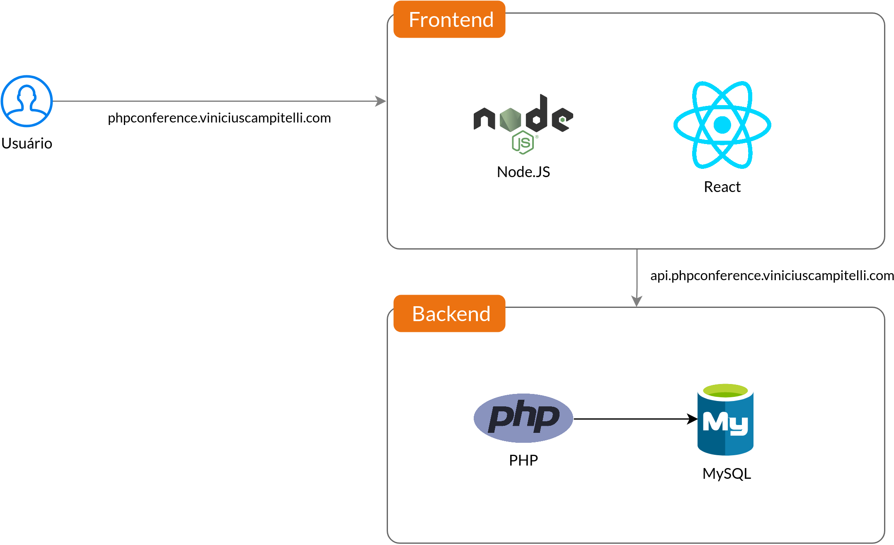
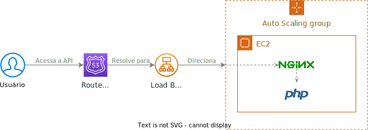

Sobre mim
Sobre mim

- Membro do PHPSP
- Entusiasta em cibersegurança
- Desenvolvedor há 15 anos
- Consultor e instrutor de treinamentos em TI
Aplicação
Aplicação
Arquitetura do exemplo
Computação em Nuvem
Computação em Nuvem
Conceito segundo o NIST*
... é um modelo para possibilitar acesso ubíquo, conveniente e sob demanda via rede a um conjunto de recursos computacionais configuráveis (como servidores, aplicações e armazenamento) que podem ser rapidamente provisionados e disponibilizados com o mínimo de esforço de gerenciamento ou interação com o provedorProposta SP 800-145
* Instituto Nacional de Padrões e Tecnologia dos Estados Unidos
Computação em Nuvem
Conceito segundo o NIST
Características essenciais:
Self-service sob demanda
Cliente deve provisionar serviços unilateralmente sem interação humana com o provedor
Acesso generalizado à rede
Serviços devem ser disponibilizados e acessados via mecanismos padrões de rede
Agrupamento de recursos
Devem servir múltiplos clientes, sendo atribuídos e reatribuídos de forma dinâmica
Elasticidade rápida
Recursos devem ser escaláveis para suportar a demanda
Serviço mensurável
Deve ser possível medir e monitorar o uso de cada serviço
Computação em Nuvem
Vantagens e desvantagens
Vantagens
- Permite ao cliente focar no problema
- Velocidade de implementação
- Elasticidade de recursos
- Processamento distribuído
- Economia de custos (de modo geral)
Desvantagens
- Maior complexidade de início
- Vendor lock-in
- Ameaças de segurança (se não bem configurada)
- Gastos imprevisíveis (se não bem configurados)
Cloud Computing
Principais provedores

Veja mais provedores no artigo do Gartner:
"Quadrante Mágico para infraestrutura em nuvem e serviços de plataforma"
Amazon Web Services
Amazon Web Services
Visão geral
O principal provedor de cloud segundo o Gartner nos últimos 10 anos, com mais de 200 serviços disponíveis
aws.amazon.comAmazon Web Services
Alguns serviços
- API: API Gateway
- Armazenamento: S3, EFS
- Bancos de Dados: RDS, DocumentDB, MemoryDB
- CDN: CloudFront
- Configurações: Systems Manager
- Containerização: ECS, EKS
- DNS: Route 53
- Desenvolvimento: CodeBuild, CodeCommit, CodeDeploy, CodePipeline
- Mensageria: EventBridge, SQS
- Monitoramento: CloudWatch
- Mídia: MediaConvert, MediaLive
- Processamento: EC2
- Provisionamento: CloudFormation
- Segurança: IAM, KMS
- Serverless: Lambda
Amazon Web Services
Infraestrutura global
Regiões (Regions)
Local físico onde um grupo de datacenters está localizado
Exemplos: São Paulo (sa-east-1), Virgínia do Norte (us-east-1) e Califórnia (us-west-1)
Amazon Web Services
Infraestrutura global
Zonas de disponibilidade (Availability zones)
Cada grupo de datacenters em uma região com alta conectividade entre si, úteis para prover alta disponibilidade dentro de uma região
Exemplos: sa-east-1a, sa-east-1b, sa-east-1c
Amazon Web Services
Infraestrutura global
Zonas locais (Local zones)
Locais alternativos mais próximos a grandes cidades para diminuir a latência
Exemplos: Rio de Janeiro, Buenos Aires, Santiago
Amazon Web Services
Infraestrutura global
28 regiões
90 zonas de disponibilidade
245 países e territórios atendidos
Serviços
AWS IAM
Serviços » IAM
Definição
O AWS Identity and Access Management é um serviço responsável pela gestão de identidades e acesso aos serviços de contas da AWS
docs.aws.amazon.comServiços » IAM
Entidades
Usuário
Entidade que representa uma pessoa ou aplicação que irá interagir com a AWS, que possui suas próprias credenciais (access keys) e deve receber as permissões necessárias para liberar acesso aos recursos da AWS
Access Key
Par de chaves (access key ID e secret access key) que garante acesso a um usuário
Serviços » IAM
Entidades
Função (role)
Identidade que também pode receber permissões e que permite que usuários a incorpore para receber o acesso desejado
Política (policy)
Conjunto de permissões permitindo ou negando o acesso à elas, que podem ser aplicadas a usuários, grupos de usuários ou funções
Serviços para nosso frontend
S3
Serviços para nosso frontend » S3
Definição
O Amazon Simple Storage Service é um serviço de armazenamento de objetos que oferece escalabilidade, disponibilidade de dados, segurança e desempenho líderes do setor
Clientes de todos os tamanhos e setores podem armazenar e proteger qualquer quantidade de dados para praticamente qualquer caso de uso, como data lakes, aplicativos nativos da nuvem e aplicativos móveis
Com classes de armazenamento econômicas e recursos de gerenciamento fáceis de usar, você pode otimizar custos, organizar dados e configurar controles de acesso ajustados para atender a requisitos específicos de negócios, organizacionais e de conformidade
aws.amazon.com/s3Serviços para nosso frontend » S3
Exemplo de uso

Serviços para nosso frontend » S3
Prática
Serviços para nosso frontend
CloudFront
Serviços para nosso frontend » CloudFront
Definição
Serviço de Rede de Entrega de Conteúdo (do inglês Content Delivery Network, resultando na sigla CDN), responsável pelo caching e distribuição de conteúdo a partir de uma das localizações de borda mais próximas de seus clientes
aws.amazon.com/cloudfrontServiços para nosso frontend » CloudFront
Exemplo de uso
 aws.amazon.com/cloudfront
aws.amazon.com/cloudfront
Serviços para nosso frontend » CloudFront
Rede global de borda (edge network)
 aws.amazon.com/cloudfront
aws.amazon.com/cloudfront
Serviços para nosso frontend » CloudFront
Conceitos
Origem
Servidor que está rodando e servindo a aplicação
Distribuição
Cadastro criado para cada origem, com suas configurações e políticas de caching
Invalidação
Ação de marcar um objeto (ou grupo de objetos) como obsoletos, fazendo com que o CloudFront busque novamente da origem
aws.amazon.com/cloudfrontServiços para nosso frontend » CloudFront
Prática
Serviços para nosso frontend
Route 53
Serviços para nosso frontend » Route 53
Definição
Serviço de DNS altamente integrado com funcionalidades da AWS (como EC2, S3, ELB), onde o usuário é cobrado pelas zonas hospedadas e número de consultas realizadas, não sendo disponibilizado no Free Tier
aws.amazon.com/route53Serviços para nosso frontend » Route 53
DNS
O Domain Name System é um serviço que tem como principal funcionalidade a conversão de domínios legíveis por seres humanos (por exemplo google.com) em endereços IP (por exemplo 142.251.132.238)
aws.amazon.com/route53 cloudflare.com/learning/dnsServiços para nosso frontend » Route 53
Exemplo de uso

aws.amazon.com/route53
Serviços para nosso frontend » Route 53
Prática
Serviços para nosso backend
EC2
Serviços para nosso backend » EC2
Definição
O Amazon Elastic Compute Cloud é uma plataforma de computação mais ampla e profunda, com mais de 500 tipos de instâncias e opções de processador, armazenamento, rede e sistema operacional para ajudá-lo a atender melhor às necessidades de sua carga de trabalho
aws.amazon.com/ec2Serviços para nosso backend » EC2
Prática
Serviços para nosso backend
RDS
Serviços para nosso backend » RDS
Definição
O Amazon Relational Database Services é uma coleção de serviços gerenciados que simplifica a configuração, operação e dimensionamento de bancos de dados na nuvem
aws.amazon.com/rdsServiços para nosso backend » RDS
Prática
Serviços para nosso backend
Elastic Load Balancing
Serviços para nosso backend » Elastic Load Balancing
Definição
O balanceador de carga é uma ferramenta para fazer a distribuição do tráfego de rede entre destinos diferentes para permitir a escalabilidade da aplicação
Cada vez que uma máquina é criada, ela deve avisar o Load Balancer para que ele atualize seu cadastro interno para poder começar a rotear as requisições para o novo serviço
Health check
Periodicamente, o Load Balancer faz checagens nos servidores cadastrados para verificar se eles estão respondendo, removendo-os se não responderem
Serviços para nosso backend » Elastic Load Balancing
Arquitetura sem Load Balancer
Arquitetura com Load Balancer
Serviços para nosso backend » Elastic Load Balancing
Conceitos
Listeners
Configuração que especifica o protocolo, porta e ação a ser tomada (como autenticação, uma resposta fixa, redirecionamento de URL ou encaminhamento para o destino)
Listeners for your Application Load BalancersTarget Groups
Configuração que define como a requisição deve chegar em um servidor de destino
Target groups for your Application Load BalancersServiços para nosso backend » Elastic Load Balancing
Prática
Serviços para nosso backend
Auto Scaling
Serviços para nosso backend » Auto Scaling
Definição
Serviço que monitora seus aplicativos e ajusta automaticamente a capacidade para manter um desempenho estável e previsível com o menor custo possível
Com ele, é fácil configurar a escalabilidade de aplicativos para vários recursos em vários serviços em minutos
aws.amazon.com/autoscalingServiços para nosso backend » Auto Scaling
Prática
Arquitetura
Arquitetura
Deploy
Arquitetura
Frontend
Arquitetura
Backend
Migração
Migração
Dicas ao migrar para a cloud
-
Entenda os conceitos do
The Twelve-Factor
App, manifesto criado para ajudar desenvolvedores a criar aplicações para a
nuvem
- Exemplo: utilize variáveis de ambiente para configurar parâmetros e credenciais que dependam do ambiente
Migração
Dicas ao migrar para a cloud
-
Não dependa diretamente do sistema de arquivos (por exemplo, com chamadas diretas a
funções como
fopen()), já que os servidores estão sendo constantemente criados ou desativados pelas políticas de auto scaling- Até é possível compartilhar uma partição de disco entre todas suas instâncias do EC2 através do EFS, por exemplo
- Abstraia as interações com os arquivos para uma classe, criando duas: uma para acessos locais (com as funções diretas do PHP) e outro quando estiver rodando na cloud (com chamadas ao S3, por exemplo)
- Como as sessões do PHP são armazenadas por padrão em arquivos, é preciso usar outra abordagem, por exemplo sistemas em memória como ElastiCache for Memcached ou MemoryDB for Redis
Migração
Dicas ao migrar para a cloud
Algumas referências:
Obrigado!
Treinamentos in company